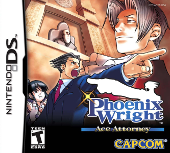
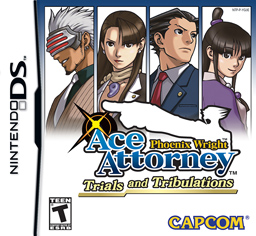

The Phoenix Wright: Ace Attorney Franchise
An Overview of the Phoenix Wright: Ace Attorney Franchise
 "Phoenix Wright: Ace Attorney Trilogy Header")
Phoenix Wright: Ace Attorney is a visual novel adventure video games franchise developed and
published by Capcom, and written by Shu Takumi. The first game was released in 2001, with many
other additions to the franchise being released throughout the years, such as sequels to the
main story, spin-offs and prequels, as well as anime, movie adaptations and many more that make
the Ace Attorney universe so vast and special.
The main trilogy of Phoenix Wright: Ace Attorney focuses its story on the journey of the titular
character Phoenix Wright, a rookie defense attorney who just begun his career. He is accompanied
by Mia Fey, his mentor and friend, as well as genius prosecutor Miles Edgeworth, medium in training
Maya Fey and many other characters.
Phoenix Wright: Ace Attorney has a storytelling reminiscent of legal dramas, with each chapter
featuring a murder mystery, an investigation and a trial to defend Phoenix's client and find out who
the real culprit is. The story also expands upon the main characters motivations and troubles, bringing
out the best (and sometimes worst) in each of them.
Phoenix Wright: Ace Attorney
-

- Phoenix Wright
- Mia Fey
- Maya Fey
- Misty Fey
- Miles Edgeworth
- Gregory Edgeworth
- The Judge
- Dick Gumshoe
- Manfred von Karma
- Larry Butz
In the first game of the franchise, you get in the shoes of Phoenix Wright, a rookie defense attorney who's just beggining his career under the tutelage of his boss and friend Mia Fey. As the first game in the line, it also introduces the whole universe of Ace Attorney, as well as the main characters that will appear throughout the entire franchise, such as genius prosecutor, Miles Edgeworth, and the medium in training and Mia's little sister, Maya Fey. This game focuses primarily in establishing the characters relationships and backstories, as well as solving some disputes between them.
Major Characters in this Installment:
See more here
Phoenix Wright: Ace Attorney - Justice for All
- Phoenix Wright
- Maya Fey
- Pearl Fey
- Morgan Fey
- Matt EnGarde
- Shelly deKiller
- Franziska von Karma
- Miles Edgeworth
- Dick Gumshoe

The second game of the main trilogy, Justice for All, serves as a continuation for the events of the first game, featuring Phoenix Wright on the peak of his career, not having lost a single case since he started acting as a defense attorney. Naturally, the game's main plot puts his pride as an attorney to the test, as well as his desire to protect the wrongfully accused. This game also has a few additions to the cast, like revenge-seeking prodigy, Franziska von Karma, and the adorable medium prodigy, and Maya's cousin, Pearl Fey. This game introduces a whole new game mechanic and focuses primarily on building Phoenix's character, as well as concluding other characters' plotlines.
Major Characters in this Installment:
See more here
Phoenix Wright: Ace Attorney - Trials and Tribulations
-

- Mia Fey
- Phoenix Wright
- Dahlia Hawthorne
- Diego Armando
- Godot
- Maya Fey
- Pearl Fey
- Misty Fey
- Miles Edgeworth
- Franziska von Karma
- Dick Gumshoe
- Sister Iris
- Morgan Fey
The third and last game of the main trilogy, Trials and Tribulations is the (intended) finale for the main characters' stories and plots, tying it all around with a nice ribbon. In it's prologue, it features, suprisingly, Mia Fey on the start of her career, explaining a lot about her past and the past of the main characters, and how they all tie together with the entire plot of the game. As such, this game's main plot focuses a lot on the past and the idea of fate, and how everything, one way or another, must come to an end. While bringing back some familiar faces from the first two games, Trials and Tribulations, just like the previous two games, introduces new characters for the overall plot, like mysterious masked prosecutor, Godot, and Dahlia Hawthorne, Phoenix's ex-girlfriend. This game is considered to be the best game in the trilogy, and in the entire franchise altogether.
Major Characters in this Installment:
See more here
Other entries in the franchise
- Apollo Justice: Ace Attorney Trilogy
- The Great Ace Attorney Chronicles
- Ace Attorney Investigations
- Professor Layton vs. Phoenix Wright: Ace Attorney
- Phoenix Wright: Ace Attorney - Turnabout Spotlight
- Ace Attorney (anime)
Series Miscellany Info
| Titles | Number of Cases |
Launch Date |
Copies Sold |
|---|---|---|---|
| Phoenix Wright: Ace Attorney |
1. The First Turnabout 2. Turnabout Sisters 3. Turnabout Samurai 4. Turnabout Goodbyes 5. Rise from the Ashes* |
JP: 09/15/2005 NA: 10/12/2005 EU: 03/16/2006 AU: 03/08/2007 |
99,312 Copies (GBA) 621,856 Copies (Nintendo DS) |
| Phoenix Wright: Ace Attorney - Justice for All |
1. The Lost Turnabout 2. Reunion, and Turnabout 3. Turnabout Big Top 4. Farewell, My Turnabout |
JP: 10/26/2006 NA: 01/16/2007 EU: 03/16/2007 AU: 09/06/2007 |
Over 530,000 Copies |
| Phoenix Wright: Ace Attorney - Trials and Tribulations |
1. Turnabout Memories 2. The Stolen Turnabout 3. Recipe for Turnabout 4. Turnabout Beginnings 5. Bridge to the Turnabout |
JP: 08/23/2007 NA: 10/23/2007 EU: 10/03/2008 |
Information Not Found |